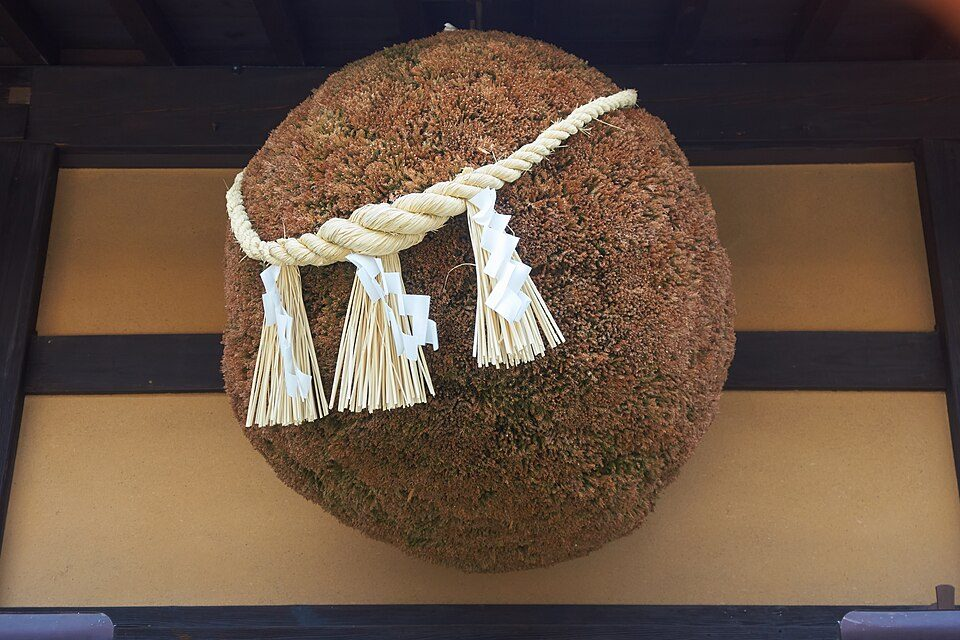
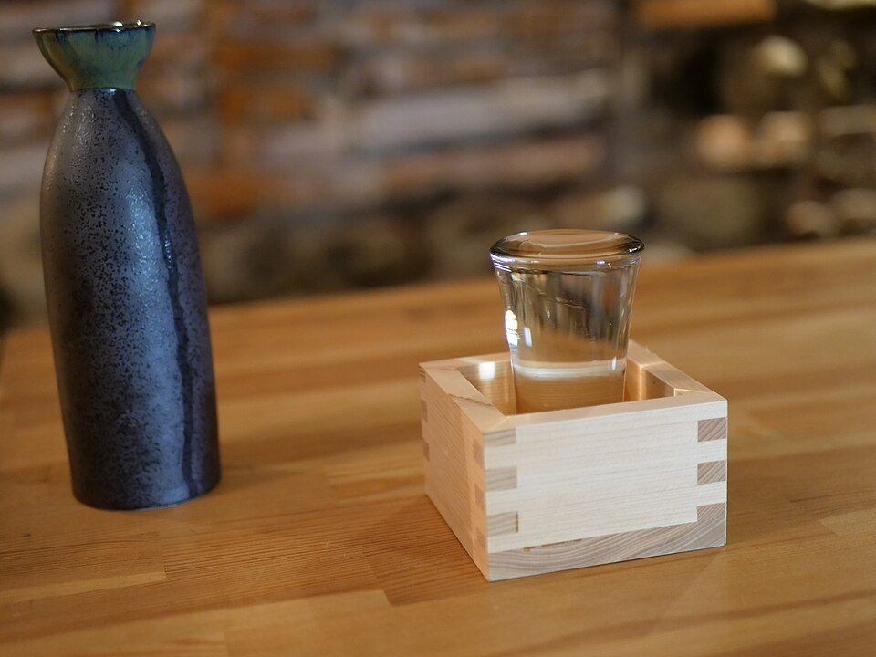
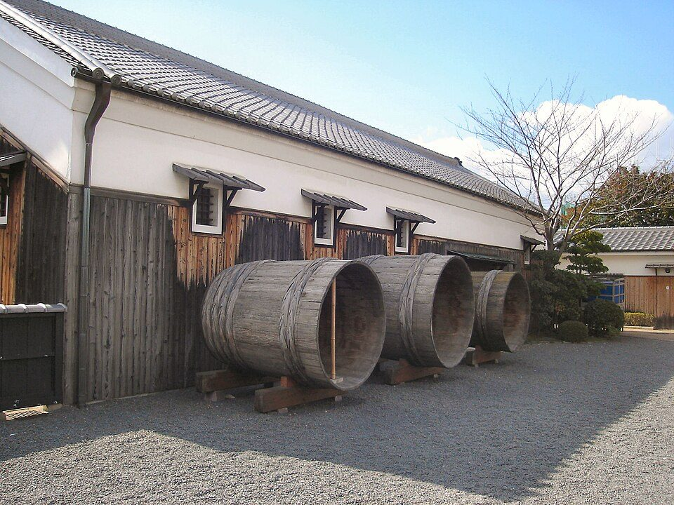

日本酒の基本と楽しみ方：種類・ラベル・保存・適量と、関西の酒蔵見学（2026年版）
要点まとめ

日本酒（清酒）を飲み始めた人向けに、ラベルの読み方、種類と味の目安、保存のしかた、体に配慮した量、価格と税金、関西の酒蔵見学をまとめました。国税庁・厚生労働省などの公的機関と、酒造組合・各蔵の公式情報を中心に調べています。お酒は20歳になってから。特定の銘柄や酒蔵をすすめるものではありません。
日本酒とは：定義と、いまの市場
米・米こうじ・水から造り、こした酒。「日本酒」は国産米・国内製造だけ
法律上は「清酒」。国産米で国内で造ったものだけ「日本酒」と表示できる[11][12]
| 項目 | 内容 |
|---|---|
| 法律上の定義 | 米・米こうじ・水を原料として発酵させ、こしたもの（アルコール分22度未満）[11] |
| 「日本酒」の表示 | 米と米こうじに国内産米だけを使い、日本国内で造った清酒（2015年に地理的表示に指定）[12][13] |
| 文化的な位置づけ | こうじ菌を使う「伝統的酒造り」が、2024年12月5日にユネスコ無形文化遺産に登録[14][15] |
| 酒蔵の数 | 清酒の製造免許場は1,514場（2024年度）。実際に造ったのは1,104場（2024酒造年度）[16][17] |
| 消費量 | 2024年度は38万kL。酒類全体の4.9%で、1975年度の約4分の1[18][19] |
見方: 国内で飲まれる量は50年で4分の1ほどに減りましたが、輸出は増えています。つまり「量より質」に動いていて、純米酒や吟醸酒の割合が増えているのもその表れです（2章）（筆者の見解）。
くわしく
- 20歳以上1人あたりの清酒は年3.7L。新潟7.7L、京都4.2L、大阪3.2L[20]
- 製造量は兵庫26.9%、京都15.1%で、2県で全国の4割強[17]
- 兵庫の灘五郷だけで全国の約2割、京都の伏見で約15%を造っている（筆者の計算）[17]
- 大阪府の製造量は552kL（12場）で、45区分中42位[17]
- 輸出額は2015年の140億円から2025年の459億円へ。ピークは2022年の475億円[21][22]
- 2025年の輸出先は中国133億円、米国110億円、香港48億円、韓国44億円の順[22]
- 新しい酒蔵の免許は、需給調整の規定で長く制限されてきた[11][23]
- 2021年から、輸出専用なら少量でも免許を受けられる特例がある（国内には売れない）[24]
種類：純米・吟醸・本醸造と普通酒
名前は「原料」と「どれだけ米を削ったか」で決まる
純米＝米と米こうじだけ。吟醸＝精米歩合60%以下、大吟醸＝50%以下[1]
| 名称 | 原料 | 精米歩合 | 要件 |
|---|---|---|---|
| 純米大吟醸酒 | 米、米こうじ | 50%以下 | 吟醸造り、香味と色沢が特に良好 |
| 純米吟醸酒 | 米、米こうじ | 60%以下 | 吟醸造り、香味と色沢が良好 |
| 特別純米酒 | 米、米こうじ | 60%以下、または特別な製造方法 | 香味と色沢が特に良好 |
| 純米酒 | 米、米こうじ | 決まりなし | 香味と色沢が良好 |
| 大吟醸酒 | 米、米こうじ、醸造アルコール | 50%以下 | 吟醸造り、香味と色沢が特に良好 |
| 吟醸酒 | 米、米こうじ、醸造アルコール | 60%以下 | 吟醸造り、香味と色沢が良好 |
| 特別本醸造酒 | 米、米こうじ、醸造アルコール | 60%以下、または特別な製造方法 | 香味と色沢が特に良好 |
| 本醸造酒 | 米、米こうじ、醸造アルコール | 70%以下 | 香味と色沢が良好 |
見方: 「精米歩合60%」は、玄米の外側を40%削って残り60%を使うという意味です[1]。表の8種類に入らない清酒が、いわゆる「普通酒」です（国の統計では「一般酒」）[17]。
ラベルの読み方
必ず書いてあるものと、書いてあれば意味があるもの
「原酒」「生酒」「生一本」などは、国の基準で使える条件が決まっている[5]
| 表示 | 意味・決まり |
|---|---|
| 品目・原材料名・アルコール分・内容量・製造者 | 必ず表示。特定名称酒は原材料名の近くに精米歩合も表示[27][5] |
| 20歳未満の飲酒は法律で禁止 | 必ず表示（「未成年者」という語は使えない）[27] |
| 製造年月 | 容器に詰めた時期。2023年1月から任意表示になった[1][5] |
| 原酒 | 造ったあと水を加えて度数を調整していない酒[5] |
| 生酒 | 加熱処理（火入れ）を一度もしていない酒。「要冷蔵」などの注意表示が義務[5] |
| 生貯蔵酒 | 生のまま貯蔵し、出荷のときに1回だけ火入れした酒[5] |
| 生一本（きいっぽん） | 一つの蔵だけで造った純米酒[5][28] |
| 樽酒 | 木の樽で貯蔵し、木の香りがついた酒（瓶詰めも含む）[5] |
| 山田錦100% など | 品種名は、使用割合が50%を超えるときに割合と一緒に表示できる[5] |
| 特撰・上撰・佳撰 | 各社が自社の商品を並べるためのランク。他社との比較には使えない[28][1] |
| 日本酒度・酸度 | 任意の表示。味の目安（4章）[28] |
味の見方と、飲み方

日本酒度はプラスが辛口の傾向。酸度は1.5が濃淡の目安
日本酒度は酒の比重の指標。マイナスほど甘く、プラスほど辛い傾向[30][31]
| タイプ | 特徴 | おすすめの温度 | 合う料理 |
|---|---|---|---|
| フルーティなタイプ | 香りが高く、味は若々しい | 10〜16℃ | 山菜や魚介など、素材の味を生かした料理 |
| 軽快でなめらかタイプ | 香りは控えめ、味は若々しい | 6〜10℃か氷温近く | あっさりして後味が軽い料理 |
| コクのあるタイプ | 香りは控えめ、味は濃厚 | 10〜45℃ | 鶏肉・豚肉・牛乳などの旨味を生かした料理 |
| 熟成タイプ | 香りが高く、味は濃厚 | 7〜25℃ | 強い旨味の、高たんぱくな料理 |
見方: 酒蔵のサイトや店頭の説明で「香りが高いか」「味が濃いか」の2つを見ると、この4タイプのどれに近いかが分かります。温度は幅があるので、同じ酒を冷やと燗で飲み比べるのが近道です（筆者の見解）。
くわしく
- 日本酒度は15℃の酒の比重から決まる値。水より軽いとプラス、重い（糖が多い）とマイナス[30][4]
- 酸度の一般的な値は約1.0〜1.8。1.5より上は濃醇、下は淡麗の目安[4]
- 日本酒度が同じでも、酸度が高いと辛く濃く感じる[31]
- アミノ酸度は市販酒で1.3〜1.7程度。多いと雑味、少ないときれいな味[30][4]
- 温度の呼び名: 雪冷え、花冷え、涼冷え、室温、日向燗、人肌燗、ぬる燗、上燗、あつ燗、飛びきり燗[33]
- 燗は人肌燗（35〜40℃）から上燗（45〜50℃）がおいしいといわれる[33]
- ぬる燗で香りが最も豊かになり、あつ燗では香りがシャープで辛口になる[33]
- 燗のつけ方: 沸かした湯に徳利を首まで1分ほど。レンジなら45秒〜1分でかき混ぜる[33]
- おちょこは一口で、ぐい呑みやワイングラスは飲み口が広く香りを楽しめる[34]
- 飲みながら水（和らぎ水）を飲むと、酔いの進み方がゆるやかになる[35][2]
保存のしかた
光と熱を避ける。開けたら冷蔵庫で1か月を目安に
適量とカロリー、やってはいけないこと
1合で純アルコール約21.6g。男性は2合、女性は1合がリスクの線
生活習慣病のリスクを高める量は、1日に男性40g以上、女性20g以上[2]
純アルコール量（g）＝飲んだ量（ml）×度数÷100×0.8 で計算します[2]。日本酒1合（180ml、15度）なら 180×0.15×0.8＝約21.6g（筆者の計算）。つまり男性は2合弱、女性は1合で、国のガイドラインがいう「リスクを高める量」に達します。
見方: 同じ重さならビールの約3倍ですが、1回に飲む量が違います。1合（約180g）なら約190kcal、ビール中びん1本（500ml）なら約195kcalと、ほぼ同じです（比重を1として筆者が計算）。
やってはいけないこと
価格と税金の目安
酒税は1.8Lで180円。紙パック2Lは1,000円台前半
清酒の酒税は1kLあたり10万円（2023年10月から据え置き）[6][38]
| 都市 | 価格 |
|---|---|
| 大阪市 | 1,189円 |
| 東京都区部 | 1,179円 |
| 京都市 | 1,138円 |
| 神戸市 | 1,129円 |
| 新潟市 | 1,009円 |
| 秋田市 | 1,224円 |
見方: 国の統計で価格を調べている清酒は、この紙パックの普通酒1品目だけです[39]。純米酒や吟醸酒の公的な価格統計はないので、ラベルの種類（2章）を見て店頭で比べることになります。
関西の酒蔵見学

灘と伏見は資料館が多く、無料〜600円で見られる
大阪府内の蔵は要予約。試飲は20歳以上で、運転する日はしない[44][9]
| 施設 | 場所・最寄り駅 | 料金 | 予約・試飲など |
|---|---|---|---|
| 白鶴酒造資料館 | 神戸市東灘区。阪神住吉駅 徒歩約5分 | 無料 | 10名未満は予約不要。年末年始休[8] |
| 菊正宗酒造記念館 | 神戸市東灘区。六甲ライナー南魚崎駅 徒歩2分 | 無料 | 10名未満は予約不要。火曜休[45] |
| 沢の鶴資料館 | 神戸市灘区。阪神大石駅 徒歩約10分 | 無料 | 10名以上は要予約。水曜休。試飲あり[46] |
| 浜福鶴吟醸工房 | 神戸市東灘区 | 無料 | 10名未満は予約不要。月曜休。生酒の試飲と有料きき酒[47] |
| 神戸酒心館（福寿） | 神戸市東灘区。阪神石屋川駅 徒歩約8分 | 無料見学あり。有料見学3,300円（税込） | どちらも要予約。有料は大人のみ・2〜6名[48] |
| 白鹿記念酒造博物館 | 西宮市。阪神西宮駅 徒歩15分 | 共通券 一般500円 | 火曜休[49] |
| 月桂冠大倉記念館 | 京都市伏見区。京阪中書島駅 徒歩5分 | 20歳以上600円（きき酒3種）、13〜19歳100円 | ネット予約推奨。現金不可。車・自転車で来た人はきき酒不可[9] |
| 黄桜 伏水蔵 | 京都市伏見区。京阪中書島駅 徒歩約20分 | 無料 | 見学のみでも要予約[50] |
| 浪花酒造（浪花正宗） | 大阪府阪南市。南海尾崎駅 徒歩約5分 | 基本の試飲は無料 | 完全予約制。試飲は20歳以上[51][44] |
| 北庄司酒造店 | 大阪府泉佐野市 | 2,200円（税込、試飲・土産付き） | 5〜20名、要予約、約60分[52] |
| 春鹿 酒蔵SHOP | 奈良市。近鉄奈良駅 徒歩約20分 | きき酒700円（税込、5種） | 火曜休。蔵見学は毎年2月ごろの期間限定[53] |
| 太田酒造 道灌蔵 | 滋賀県草津市。JR草津駅 徒歩10分 | 資料館は自由見学 | 蔵の見学は現在休止。試飲購入は可[54] |
くわしく
- 関西の清酒の地理的表示は5つ: 灘五郷（2018年）、はりま（2020年）、伊丹（2024年）[13]
- 滋賀（2022年）と京都（2025年）も、清酒の地理的表示に指定された[13]
- 大阪・奈良・和歌山に清酒の地理的表示はない（大阪はぶどう酒のみ）[13]
- 見学の前日・当日は納豆などの発酵食品を控え、香水や柔軟剤の香りも控える[55][44]
- 20歳未満は見学はできても試飲はできない[55][44]
- 2026年11月14〜15日に神戸酒心館で「福寿 蔵開き」、11月14日に「伏見の清酒まつり」[56][57]
- 「灘の酒蔵謎解き探訪2026」は2027年2月28日まで。参加無料で、資料館など14か所を巡る[58]
- 10月1日は「日本酒の日」。1978年に日本酒造組合中央会が定めた[59][60]
- 白鶴・菊正宗・白鹿の資料館は、試飲の有無が公式ページに書かれていない
今回確認できなかった点
- 温度の呼び名（雪冷え〜飛びきり燗）と℃の対応表（公式ページの本文にはなかった）
- 白鶴酒造資料館・菊正宗酒造記念館・白鹿記念酒造博物館の試飲の有無
- 2027年の蔵開き・清酒まつりの日程
- 純米酒・吟醸酒の公的な価格統計（小売物価統計の清酒は普通酒の紙パック1品目のみ）
- 清酒の販売数量のピーク年（1973年度とされる）の数量
出典（60件）
閲覧日はいずれも2026年11月5日
- 「清酒の製法品質表示基準」の概要（国税庁）
- 健康に配慮した飲酒に関するガイドライン（2024年2月19日）（厚生労働省）
- 食品表示法における酒類の表示のQ&A（2026年10月）（国税庁）
- よくあるご質問（菊正宗酒造（公式））
- 清酒の製法品質表示基準を定める件（平成元年国税庁告示第8号、最終改正 令和4年）（国税庁）
- 酒税率一覧表（令和8年10月1日〜）（国税庁）
- 小売物価統計調査（動向編）2026年9月 第1表 主要品目の都市別小売価格（総務省統計局）
- 白鶴酒造資料館（白鶴酒造（公式））
- 月桂冠大倉記念館 ご見学案内・アクセス（月桂冠（公式））
- 飲酒運転の罰則等（警察庁）
- 酒税法（3条・7条・10条・23条）（e-Gov法令検索（デジタル庁））
- 地理的表示「日本酒」生産基準（別紙1）（国税庁）
- 酒類の地理的表示一覧（国税庁）
- ユネスコ無形文化遺産登録「伝統的酒造り」特設ページ（国税庁）
- 「伝統的酒造り」がユネスコの無形文化遺産に登録されました！（2024年12月5日）（文化庁 日本遺産ポータルサイト）
- 酒のしおり（令和8年版）14 酒類等製造免許場数の推移（国税庁）
- 清酒の製造状況等について（令和6酒造年度分、2026年1月）（国税庁）
- 酒のしおり（令和8年版）12 酒類販売（消費）数量の推移（国税庁）
- 酒のしおり（令和8年版）付表 酒類販売（消費）数量の推移表（kL・成人1人当たり）（国税庁）
- 酒のしおり（令和8年版）13 令和6年度成人1人当たりの酒類販売（消費）数量表（都道府県別）（国税庁）
- 酒のしおり（令和7年版）36 最近の清酒の輸出動向について（国税庁（出典: 財務省貿易統計））
- 酒のしおり（令和8年版）36 最近の清酒の輸出動向について（国税庁（出典: 財務省貿易統計））
- 論叢第107号 酒類の製造免許及び販売業免許における需給調整要件の在り方について（2022年6月）（税務大学校（研究論文。国税庁の公式見解ではない））
- 輸出用清酒製造免許に関するQ&A（2021年1月）（国税庁）
- 酒のしおり（令和8年版）付表2 特定名称酒のタイプ別課税移出数量の推移表（国税庁）
- 法令解釈通達 第86条の6 酒類の表示の基準（清酒の製法品質表示基準の取扱い）（国税庁）
- 酒類の表示に関する説明事項（各品目共通・清酒）（2026年10月）（国税庁）
- 日本酒（清酒）に関するもの（お酒のABC）（東京国税局）
- 酒類の広告・宣伝及び酒類容器の表示に関する自主基準（2026年7月1日最終改正）（飲酒に関する連絡協議会（国税庁サイト掲載））
- 日本酒用語集（日本酒造組合中央会）
- お酒の博物誌 Q&A「日本酒度」「酸度」「アミノ酸度」とは（月桂冠（公式））
- 日本酒の味と香り（日本酒造組合中央会）
- 日本酒のおいしい飲み方（日本酒造組合中央会）
- 酒器で楽しむ日本酒（日本酒造組合中央会）
- 和らぎ水のすすめ（日本酒造組合中央会）
- 日本食品標準成分表（八訂）増補2023年 第2章データ（文部科学省）
- 二十歳未満ノ者ノ飲酒ノ禁止ニ関スル法律（e-Gov法令検索（デジタル庁））
- 酒税の税率改正（税率一本化）の概要（財務省）
- 小売物価統計調査（動向編）2026年9月 調査品目及び基本銘柄（総務省統計局）
- 酒税率一覧表（令和2年10月1日〜令和5年9月30日）（国税庁）
- 小売物価統計調査（動向編）第2表 主要品目の東京都区部小売価格（2025年9月〜2026年9月）（総務省統計局）
- 家計調査 家計収支編 二人以上の世帯 2025年 1世帯当たり年間の品目別支出金額（時系列）（総務省統計局）
- 家計調査 家計収支編 二人以上の世帯 2025年 都市階級・地方・都道府県庁所在市別1世帯当たり年間の品目別支出金額（総務省統計局）
- よくある質問（浪花酒造（公式））
- 菊正宗酒造記念館 アクセス＆予約（菊正宗酒造（公式））
- 沢の鶴資料館（沢の鶴（公式））
- 見学案内（浜福鶴吟醸工房（小山本家酒造 灘浜福鶴蔵、公式））
- 酒蔵見学（神戸酒心館（公式））
- 利用案内（白鹿記念酒造博物館（辰馬本家酒造、公式））
- 伏水蔵 見学ガイド（黄桜（公式））
- 浪花酒造（店舗案内・見学・試飲）（浪花酒造（公式））
- イベント・酒蔵見学のご案内（北庄司酒造店（公式））
- 酒蔵SHOP（今西清兵衛商店（春鹿、公式））
- 道灌蔵（太田酒造（公式））
- 阿武の鶴酒造 酒蔵見学（見学時の注意事項）（山口県観光連盟（公式観光サイト））
- 酒蔵だより「第27回 福寿 蔵開き」（灘五郷酒造組合）
- ブログ「伏見の清酒まつり in 大手筋商店街2026」（伏見酒造組合）
- 灘の酒蔵謎解き探訪2026（神戸市）
- NETWORK租税史料「明治の酒税と日本酒の日」（国税庁 税務大学校）
- 10月1日は日本酒の日（日本酒で乾杯！）（日本酒造組合中央会）
写真・画像の出典（3件）
- 酒蔵の軒先に吊るされる杉玉
写真: Celuici／Wikimedia Commons（CC BY-SA 3.0） - 升とグラス、徳利
写真: Culture Japon／Wikimedia Commons（CC BY-SA 4.0） - 月桂冠大倉記念館に展示された酒樽
写真: ＋－／Wikimedia Commons（CC BY-SA 3.0）